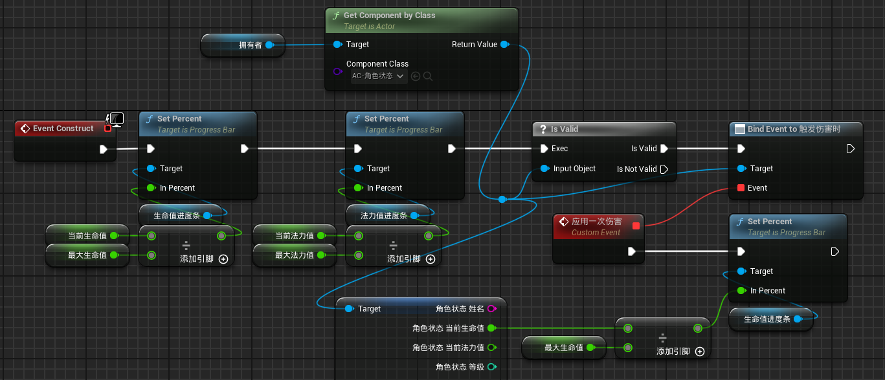

通过结构体创建。结构名称为S-角色基础属性、S-角色基础状态
注意：最大生命值属于属性，当前生命值属于状态。
在角色蓝图中添加组件：角色属性。组件为AC-角色属性（后面给出）、AC-角色对局状态
当角色购买装备时，调整基础属性值
当角色受到影响时，调整基础状态值
时刻关注角色的状态值，除非buff状态，否则状态值不应该大于属性值。
在基础属性、基础状态之外还会有额外的属性和状态。待设计。
在lol的英雄属性的基础上，添加下列属性
元素属性
姓名：出于虚幻引擎数据表格特点，给角色基础属性加上一个成员：姓名。同样的，行名称在定义数据表格的时候也需要赋值为姓名。姓名为字符串类型
角色对局状态包括角色属性和角色状态两个功能
同时实现血条显示功能。
从历史版本上，AC-角色对局状态出现之前有两个ActorComponent来实现AC-角色对局状态的功能：
AC-角色对局状态和AC角色属性
AC-角色对局状态有的东西
变量：角色状态（S-角色基础状态）、角色属性（S-角色基础属性）。可编辑实例，生成时公开
函数：角色属性初始化、消耗生命值、消耗法力值、恢复生命值、恢复法力值

事件分发器

实现5个函数。部分函数给数据比较麻烦，会创建几个局部变量帮助理线
在AC中写角色初始化函数
根据数据表格中写的角色属性对角色模板中的角色属性组件中的值进行赋值。

四个函数是有区别的
区别是：消耗生命值可以减到负数，消耗法力值不能减到负数。而且每次使用技能时还要判断当前法力值是否大于所需消耗生命值。所以消耗法力值在最开始就应该进行一个判断，并返回一个bool值表示能否使用该次技能。
我们希望玩家在受到伤害时调用一个事件，即创建一个事件分发器，命名为“触发伤害时”，在设置完当前生命值后调用这个事件分发器。
（事件分发器是Actor组件与使用组组件的Actor之间通信的方式。在Actor组件中调用一个事件（分发器）就是再说：这件事情触发了。但是Actor组件本身并不决定在受到伤害时除了减少生命值之外应该做什么）
同时我们再创建一个事件分发器，叫做“死亡时”，当当前生命值小于等于0时触发调用。


在事件图表中，EventBeginPlay时，创建控件组件。
在AC中GetOwner，也就是得到AC的拥有者，对拥有者Add Widget Component，Class选择WidgetComponent，也就是控件组件。现在这个东西就等价于在Actor中创建一个Widget组件。
然后我们设置Widget组件的属性
位置坐标设置为Actor的坐标的上面来将其显示在头部，然后设置绘制大小（SetDrawSize），设置控件空间（SetWidgetSpace）为屏幕，并关闭碰撞（SetCollisionEnabled）
回到AC，调用CreateWidget来创建widget，然后SetWidget。SetWidget的Target为AddWidgetComponent的返回值，SetWidget的Widget为CreateWidget的返回值。

现在创建一个非常简单的Widget，命名为“WBP-生命值和蓝条”，在画布面板下只有两个ProgressBar，画布面板和进度条同样大小。进度条都设置为是变量。
接下来设置数值绑定，也就是Widget如何与Actor组件进行通信。
WBP-生命值和蓝条中，在EventConstruct时，实现对图示四个变量的赋值
这时，我们在CreateWidget时只需要提供拥有者一个参数。其他我们需要的参数可以创建变量来通过拥有者提供
首先创建变量


同时对进度条的进度值进行数值绑定。
接下来点击进度条（生命值进度条或法力值进度条。这里以生命值进度条为例）
在细节--进度--百分比中选择绑定
我们会在AC中CreateWidget，在CreateWidget节点上进行WBP相关变量的赋值。拥有者会由AC中GetOwner函数提供。
回到WBP继续进行绑定，我们在GetComponent后得到了AC-角色对局状态，就可以从他的返回值处get 角色状态，将角色的 当前生命值/最大生命值 ，将结果输出给进度条进度值。


现在关注BP角色模板，添加AC角色状态组件，关注细节中的默认值。
在这里事件分发器也被视为变量。
可以在Actor中点击组件中的角色对局状态组件，在细节中找到我们的事件分发器事件。
BP-角色模板的构造函数中，实现初始化

旧版本解决方案(已弃用)注意事项
在WBP中我们会Get拥有者的Component by Class，而且get的是AC-角色对局状态。但是拥有者的变量类型是Actor对象引用，而不是BP-角色模板的对象引用。所以，如果我们给CreateWidget的拥有者参数的赋值，它没有AC-角色对局状态，则调用失败。所以在进度条绑定的时候，我们应该对GetComponentByClass的返回值进行一次IsValid判断。同时我给“拥有者”变量的名称加了说明，以致于在CreateWidget时能够正确赋值。
数值绑定方案2（已弃用）：
弃用原因：自己的方案不用写事件分发器和Widget的EventConstruct
参考视频：
https://www.bilibili.com/video/BV1ygHeeSEXv/?spm_id_from=333.999.0.0&vd_source=79fbe818ff96aae3677e123f0374bd91
在WBP的图表中
在EventConstruct时，对进度条的进度进行SetPersent。Persent值为传入的当前值/最大值，来初始化进度条的百分比。
然后GetComponentByClass来获取拥有者的AC-角色属性和AC角色状态，
通过Bind Event to 触发伤害时，来实现Actor组件和使用的Actor之间的通信。（是靠事件分发器实现的）这样，每次调用“触发伤害时”事件时，让血条来更新。
